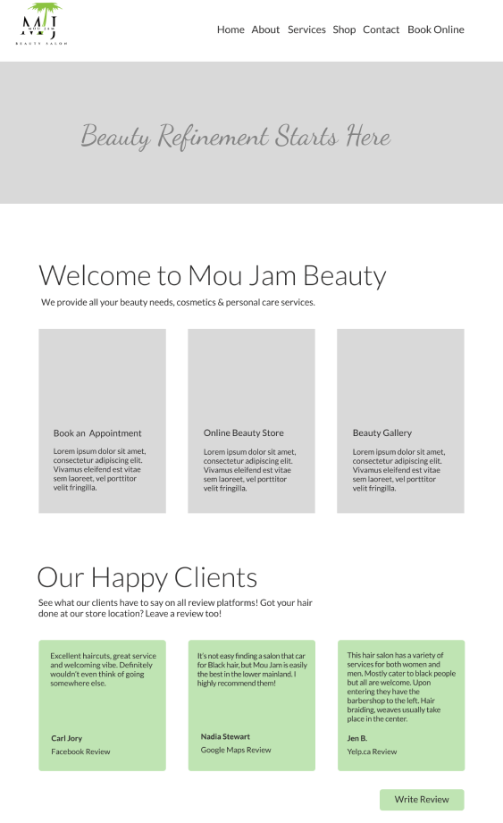
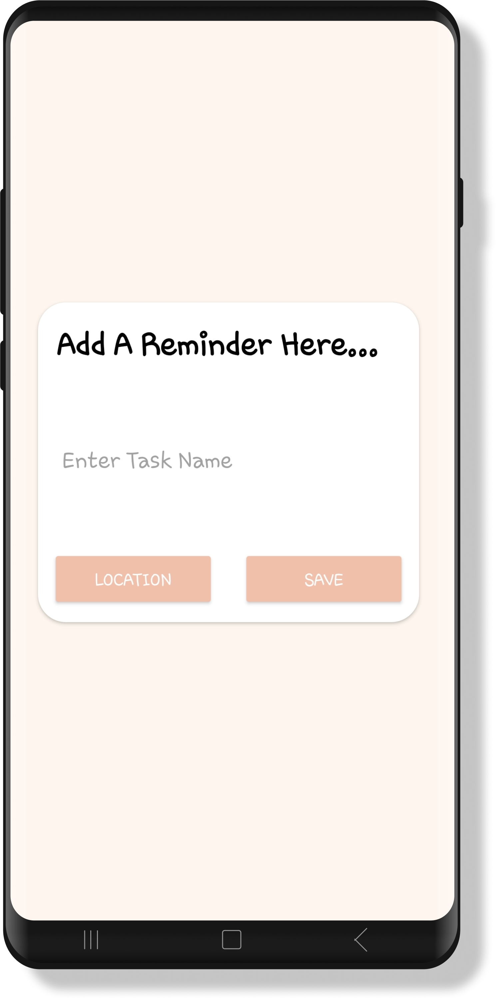
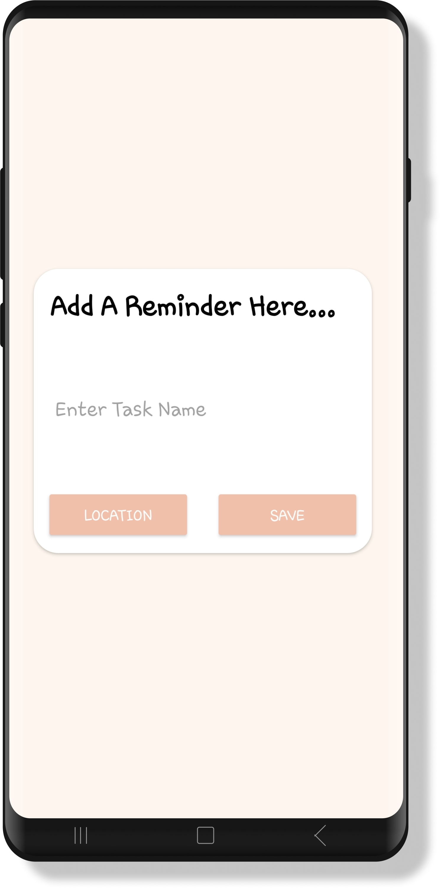

Project at Downtown Surrey Business Improvement Association
Role:
Tools:
Designer
Figma & WordPress
Date:
Summer 2023
Link:
https://moujambeauty.ca/This website was created during part of my internship at the Downtown Surrey Business Improvement Association (DSBIA). I was part of a team called Click on Surrey, that outsourced to local businesses in the Downtown Surrey area to offer marketing, technological and other design based services. I was specifically in charge of website related services, including website designs/development and any related technical assistance. Mou Jam Beauty previously had a website that had been designed for them, but they wished for a new design. They had felt that the old design did not encompass their salon’s aesthetic and image. There were additionally some issues of outdated aspects within their website and WordPress that were causing critical errors throughout. My role was to completely re-design the website to ensure efficiency and that it fit their desired image.
TMy first step in my process was to conduct an initial meeting with one of the owners of Mou Jam Beauty to discuss her vision for the website, including what aspects of the previous website she agreed with and or didn’t. For example, the previous website did not have a clear colour palette - instead using many different colours throughout. This was an aspect she really wanted to adjust to ensure a clear and consistent colour palette that was followed throughout the entire website. Additionally we discussed what overall aesthetic she wanted to encompass for the website, which was more of a sleek and modern appearance. Specifically to fit more with the company’s logo. This helped me to narrow down a focus for the website and begin creating mockups within Figma.
Figure 1: Screenshot of colour schemes
As seen in figure 1 I started by determining the original colours used, before creating a new colour palette beside it. These colours were selected from their logo in order to keep consistent branding.
The figure on the left (figure 2) shows a screenshot of the original homepage. Figure 3 shows an initial mock-up I created with the new colour palette in a format similar to the original in order to see how this new palette would work. This lead me back to Figma where I began testing out new designs that would help increase the visual appeal and efficiency of the landing page.
Figure 2: Screenshot of original landing page
Figure 3: Mockup of original landing page with new colour scheme
Figure 4 and 5 show two more mock ups I created within Figma for the new design of the landing page/homepage. I opted to create a new banner and navigation system that was easier to read and that would catch the user’s attention from the start. The grey boxes are placeholders for images. In figure 4, I initially used a more cursive font for the headers, with a sans-serif font for the body. However after discussion with my contact at Mou Jam we opted for a more sleek and sans-serif font for the headers as this fit their aesthetic more. In figure 5 I tested out positioning for a new slogan they wanted to add on the header.
Figure 4: Prototype of landing page
Figure 5: Prototype of landing page
After conducting more meetings to discuss the mock-up, we determined that the first few blocks on the page were no longer necessary and cluttering the home page. The owner wanted users to be faced with an immediate call to action - to book a service. This lead me to my final mock-up where I added a new heading below the header image - introducing the salon and providing users quick access to booking an appointment. From here I was able to transfer my design to WordPress, where they held their website in order to recreate it.

Figure 6: Final prototype of landing page
 


Figure 3: Screen to add a new reminder
Figure 4: Screen where the user can fill in details of reminder
Figure 5: Screen where the user can search for their reminder's location

Figure 6: Screenshot of section of Java code in Android Studio used to compare the user's location to the location of the reminder